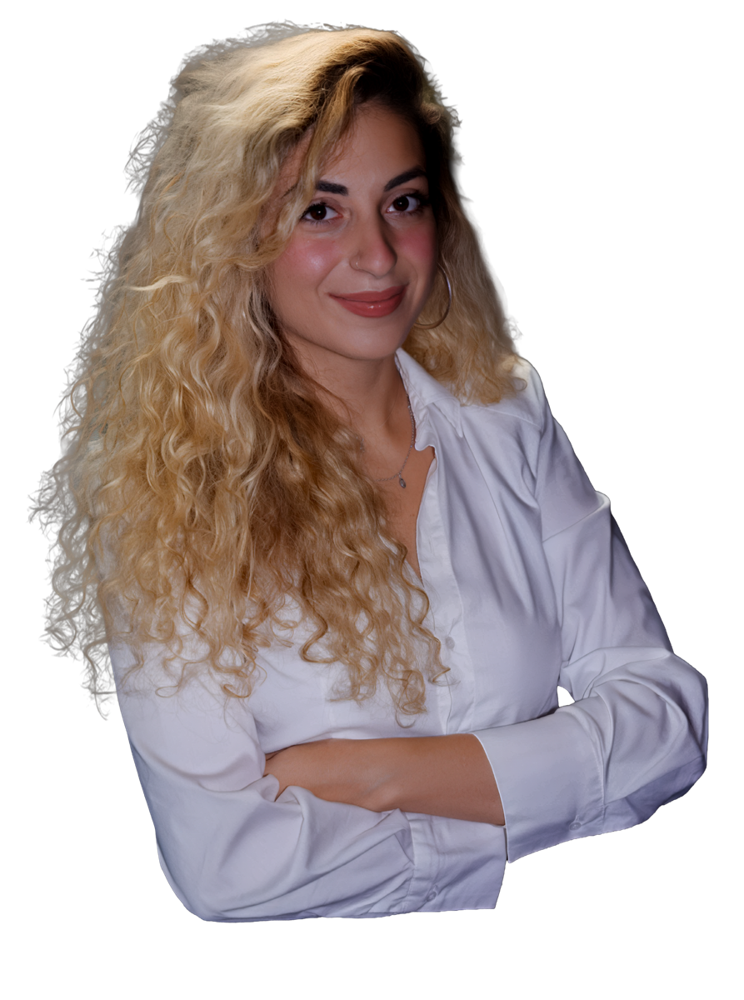
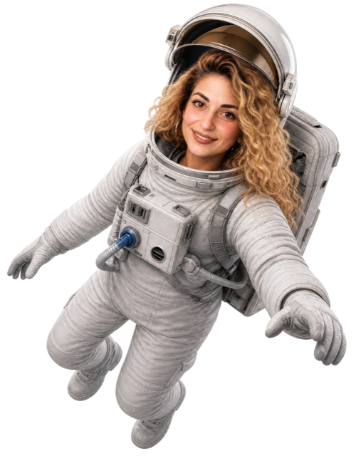
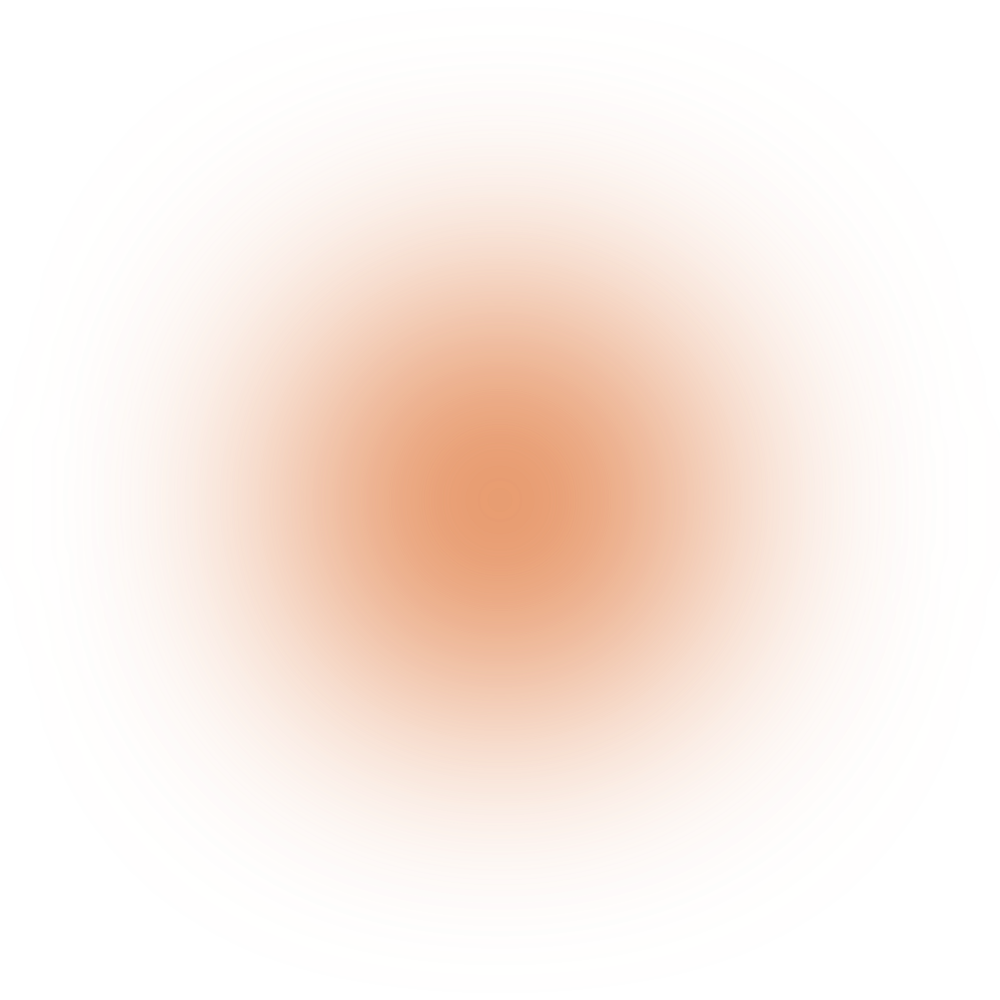
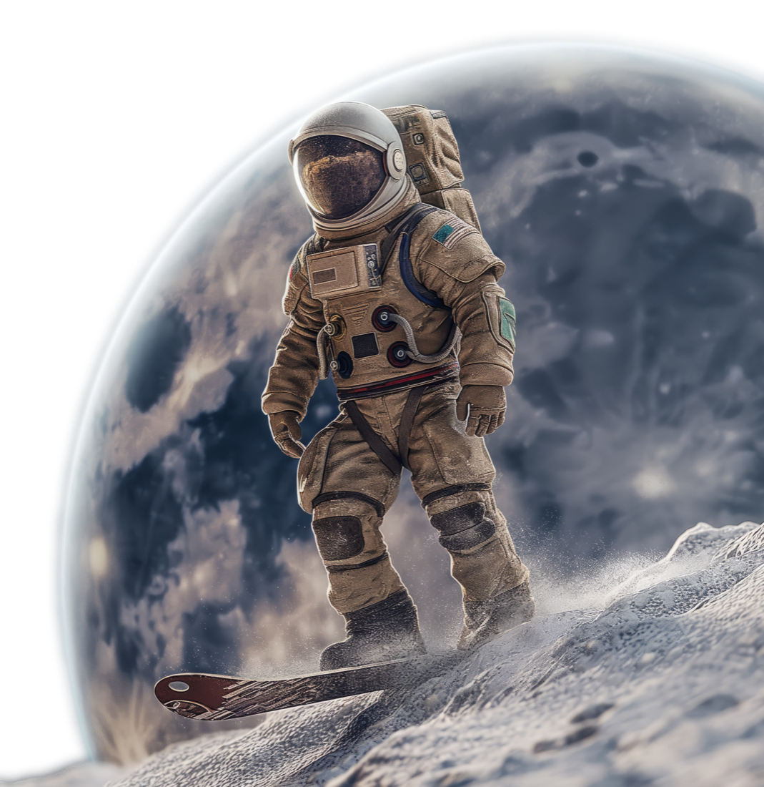

מיצוי הפוטנציאל
והעלאת מחירים
לקוחות משלמים יותר למותגים שנראים כמו הטופ של התעשייה. אתר מעוצב בסטנדרט פרימיום מייצר אוטוריטה מיידית ומאפשר לכם לגבות את המחיר שבאמת מגיע לכם.
טוען את המסע



נעים להכיר
רוני אליהו
אני הטייסת שלכם להיום
לקוחות משלמים יותר למותגים שנראים כמו הטופ של התעשייה. אתר מעוצב בסטנדרט פרימיום מייצר אוטוריטה מיידית ומאפשר לכם לגבות את המחיר שבאמת מגיע לכם.
כשגולש נכנס לאתר חווייתי, זורם ומרשים, רמת האמון שלו מזנקת בשניות. הוא לא רק מסתכל, הוא מבין עם מי יש לו עסק ומשאיר פרטים בביטחון מלא.
רוב האתרים בשוק נראים אותו דבר ונשכחים שנייה אחרי שסוגרים את הלשונית. אתר דינמי עם שפה ויזואלית ייחודית מייצר אימפקט שאי אפשר להתעלם ממנו.

כשאנשים מגיעים לאתר שלכם, יש לכם בדיוק 3 שניות להוכיח להם שהם הגיעו למקום הנכון.
המטרה שלי היא לקחת עסקים מעולים ולהעניק להם נוכחות דיגיטלית בסטנדרט הגבוה ביותר. כל פרויקט אצלי נבנה מאפס מתוך שילוב של סטוריטלינג ויזואלי סוחף, אנימציות דינמיות ותשומת לב לכל פיקסל.
כשעיצוב חדשני פוגש חשיבה חדה, התוצאה היא אתר עוצמתי מעורר השראה, כזה שגורם לכל לקוח מתעניין להבין מיד שאתם הבחירה הנכונה.

